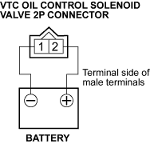

- Remove the VTC oil control solenoid valve (A).
NOTE: Install the part in the reverse order of removal with a new O-ring (B), then check these items:
- Clean and dry the VTC oil control solenoid valve mating surface.
- Coat the VTC oil control solenoid valve with engine oil.
- Do not install VTC oil control solenoid valve while wearing fibrous gloves.
- Be careful not to contaminate the cylinder head hole.

- Check the port (A) of the VTC oil control solenoid valve for dirt.

- Check the clearance between the port (retard side) and the valve. Clearance (B) should be above 1 mm (1/16 in.).

- Connect the battery positive terminal to the VTC oil control solenoid valve 2P connector terminal No. 2.

- Connect the battery negative terminal to the VTC oil control solenoid valve 2P connector terminal No. 1, then check the clearance between the port (advance side) and the valve. Clearance (A) should be above 1 mm (1/16 in.).